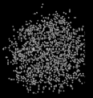

mrcImageSectionGet
指定したｚ座標の切断面を出力
オプション一覧
| オプション |
必須項目/選択項目 |
説明 |
デフォルト |
| -i |
必須 |
入力ファイル設定 |
NULL |
| -o |
必須 |
出力ファイル設定 |
NULL |
| -z |
選択 |
ｚ軸の切断する座標を設定 |
0 |
| -m |
選択 |
モード |
0 |
| -h |
選択 |
ヘルプを表示 |
|
モードの詳細
| モード |
説明 |
| 0 |
出力したファイルは入力ファイルのコピーとなる |
| 1 |
出力したファイルは入力ファイルと連動する
（ポインタのような働きをする。入力ファイルに変化があれば、出力ファイルにも同じ変化が現れる） |
******実行例******
------入力ファイルの画像------
ｘｙ平面を正面とした画像

ｙｚ平面を正面とした画像
入力ファイルのデータ
上記から、ファイルがｘ軸＝１００、ｙ軸＝１００、ｚ軸＝１００の３Ｄ構造であることがわかる
------出力ファイルの結果画像------
オプション -z=1に設定
|
最小
最大
平均値
標準偏差
標準誤差
|
0
1
0.003
0.05469
0.0005469
|
オプション -z=10に設定
|
最小
最大
平均値
標準偏差
標準誤差
|
0
1
0.0059
0.0765845
0.000765845
|
オプション -z=30に設定
|
最小
最大
平均値
標準偏差
標準誤差
|
0
1
0.0005
0.0223551
0.000223551
|